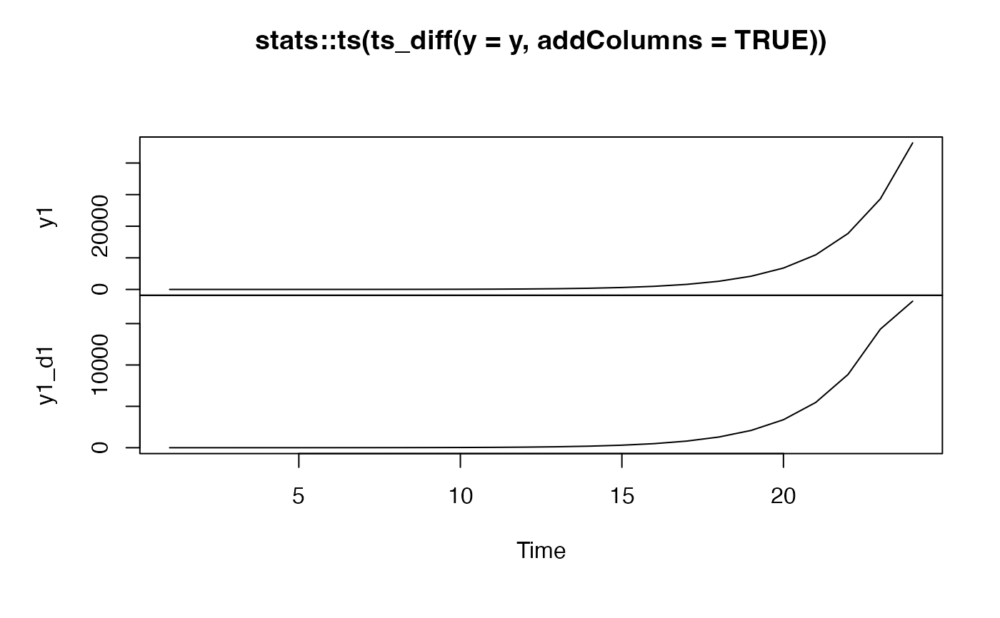
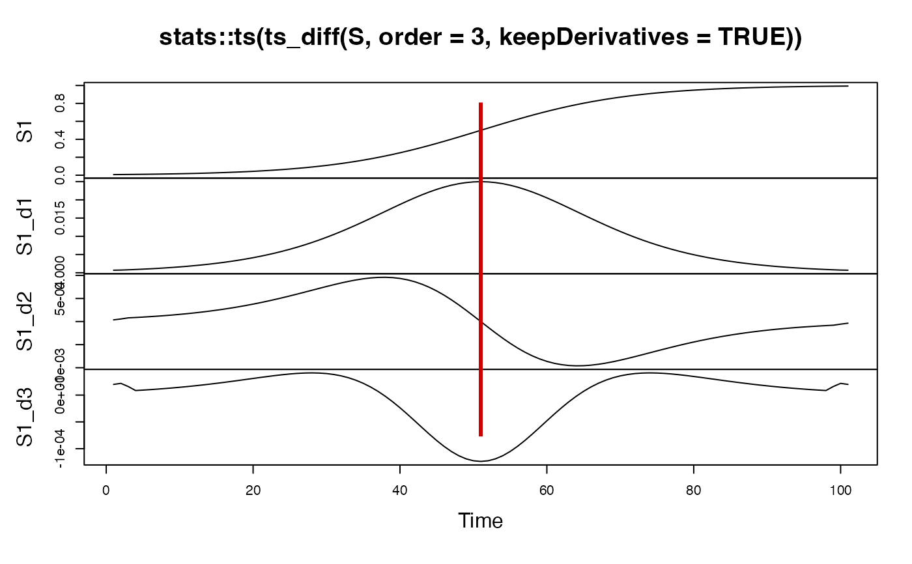
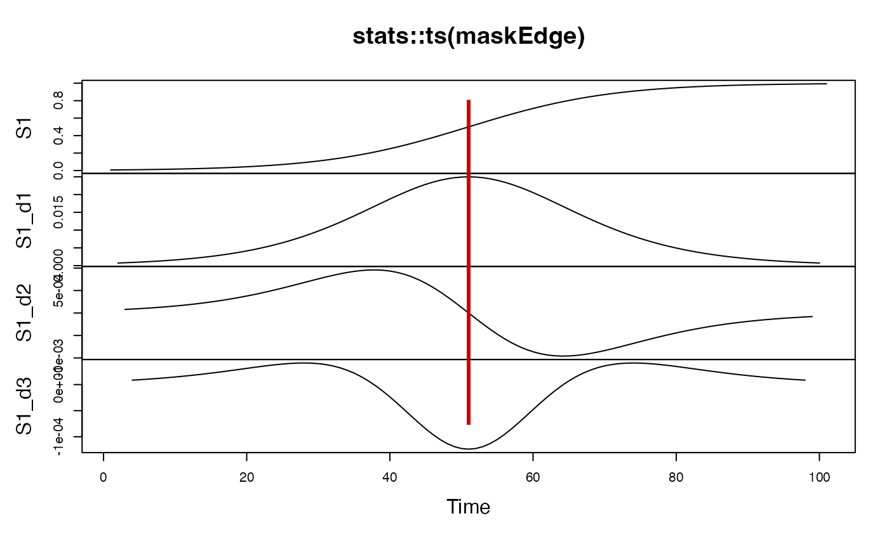

Iteratively differenced series up to order. The same length as the original series is recovered by calculating the mean of two vectors for each iteration: One with a duplicated first value and one with a duplicated last value.
ts_diff(
y,
order = 1,
addColumns = TRUE,
keepDerivatives = FALSE,
maskEdges = NULL,
silent = TRUE
)A timeseries object or numeric vector or a matrix in which columns are variables and rows are numeric values observed over time.
How many times should the difference iteration be applied? (default = 1)
Should the derivative(s) be added to the input vector/matrix as columns? (default = TRUE)
If TRUE and order > 1, all derivatives from 1:order will be returned as a matrix )default = FALSE)
Mask the values at the edges of the derivatives by any numeric type that is not NULL (default = NULL)
Silent-ish mode
Depending on the setting of addColumns and the object type passed as y, a vector of equal length as y iteratively differenced by order times; a matrix with derivatives, or a matrix with original(s) and derivative(s).
The values at the edges of the derivatives represent endpoint averages and should be excluded from any subsequent analyses. Set argument maskEdges to a value of your choice.
Other Time series operations:
ts_center(),
ts_changeindex(),
ts_checkfix(),
ts_detrend(),
ts_discrete(),
ts_duration(),
ts_embed(),
ts_integrate(),
ts_levels(),
ts_peaks(),
ts_permtest_block(),
ts_permtest_transmat(),
ts_rasterize(),
ts_sd(),
ts_slice(),
ts_standardise(),
ts_sumorder(),
ts_symbolic(),
ts_trimfill(),
ts_windower()
# Here's an interesting numeric vector
y<-c(1,1,2,3,5,8,13,21,34,55,89,144,233,377,610,987,1597,2584,4181,6765,10946,17711,28657,46368)
# Return the first order derivative as a vector
ts_diff(y=y,addColumns=FALSE)
#> [1] 0.0 0.5 1.0 1.5 2.5 4.0 6.5 10.5 17.0
#> [10] 27.5 44.5 72.0 116.5 188.5 305.0 493.5 798.5 1292.0
#> [19] 2090.5 3382.5 5473.0 8855.5 14328.5 17711.0
# Return original and derivative as a matrix
plot(stats::ts(ts_diff(y=y, addColumns=TRUE)))

# Works on multivariate data objects with mixed variable types
df <- data.frame(x=letters, y=1:26, z=sin(1:26))
# Returns only derivatives of the numeric colunmns
ts_diff(y=df,addColumns=FALSE)
#> y_d1 z_d1
#> 1 1 0.067826442
#> 2 1 -0.350175488
#> 3 1 -0.833049961
#> 4 1 -0.550022141
#> 5 1 0.238693499
#> 6 1 0.807955437
#> 7 1 0.634386872
#> 8 1 -0.122434057
#> 9 1 -0.766689679
#> 10 1 -0.706054346
#> 11 1 0.003724096
#> 12 1 0.710078622
#> 13 1 0.763590137
#> 14 1 0.115060402
#> 15 1 -0.639255336
#> 16 1 -0.805842666
#> 17 1 -0.231541965
#> 18 1 0.555637351
#> 19 1 0.831966249
#> 20 1 0.343389214
#> 21 1 -0.460898280
#> 22 1 -0.841438021
#> 23 1 -0.448363526
#> 24 1 0.356934327
#> 25 1 0.834068406
#> 26 1 0.894910201
# Returns original data with derivatives of the numeric columns
ts_diff(y=df, order=4, addColumns=TRUE)
#> y z y_d4 z_d4
#> 1 1 0.841470985 0 0.191475573
#> 2 2 0.909297427 0 0.262795618
#> 3 3 0.141120008 0 0.115208378
#> 4 4 -0.756802495 0 -0.331083744
#> 5 5 -0.958924275 0 -0.480773913
#> 6 6 -0.279415498 0 -0.140089980
#> 7 7 0.656986599 0 0.329392034
#> 8 8 0.989358247 0 0.496032531
#> 9 9 0.412118485 0 0.206623007
#> 10 10 -0.544021111 0 -0.272754758
#> 11 11 -0.999990207 0 -0.501363056
#> 12 12 -0.536572918 0 -0.269020472
#> 13 13 0.420167037 0 0.210658292
#> 14 14 0.990607356 0 0.496658795
#> 15 15 0.650287840 0 0.326033492
#> 16 16 -0.287903317 0 -0.144345500
#> 17 17 -0.961397492 0 -0.482013905
#> 18 18 -0.750987247 0 -0.376520948
#> 19 19 0.149877210 0 0.075143632
#> 20 20 0.912945251 0 0.457721503
#> 21 21 0.836655639 0 0.419472335
#> 22 22 -0.008851309 0 -0.004437763
#> 23 23 -0.846220404 0 -0.380449507
#> 24 24 -0.905578362 0 -0.303830690
#> 25 25 -0.132351750 0 -0.021523512
#> 26 26 0.762558450 0 0.082040944
# Plot logistic S-curve and derivatives 1 to 3
S <- stats::plogis(seq(-5,5,.1))
plot(stats::ts(ts_diff(S, order=3, keepDerivatives = TRUE)))
abline(v=which(seq(-5,5,.1)==0), col= "red3", lwd=3)

# Plot again, but with masked edges
(maskEdge <- ts_diff(S, order=3, keepDerivatives = TRUE, maskEdges = NA))
#> S1 S1_d1 S1_d2 S1_d3
#> 1 0.006692851 NA NA NA
#> 2 0.007391541 0.0007348601 NA NA
#> 3 0.008162571 0.0008108787 7.987762e-05 NA
#> 4 0.009013299 0.0008946154 8.797167e-05 8.486490e-06
#> 5 0.009951802 0.0009868220 9.685060e-05 9.305569e-06
#> 6 0.010986943 0.0010883166 1.065828e-04 1.019515e-05
#> 7 0.012128435 0.0011999876 1.172409e-04 1.115939e-05
#> 8 0.013386918 0.0013227984 1.289016e-04 1.220225e-05
#> 9 0.014774032 0.0014577908 1.416454e-04 1.332731e-05
#> 10 0.016302499 0.0016060891 1.555562e-04 1.453764e-05
#> 11 0.017986210 0.0017689032 1.707207e-04 1.583556e-05
#> 12 0.019840306 0.0019475305 1.872273e-04 1.722237e-05
#> 13 0.021881271 0.0021433578 2.051654e-04 1.869804e-05
#> 14 0.024127021 0.0023578613 2.246234e-04 2.026085e-05
#> 15 0.026596994 0.0025926047 2.456871e-04 2.190694e-05
#> 16 0.029312231 0.0028492356 2.684373e-04 2.362981e-05
#> 17 0.032295465 0.0031294793 2.929467e-04 2.541974e-05
#> 18 0.035571189 0.0034351290 3.192768e-04 2.726316e-05
#> 19 0.039165723 0.0037680328 3.474731e-04 2.914192e-05
#> 20 0.043107255 0.0041300752 3.775606e-04 3.103251e-05
#> 21 0.047425873 0.0045231541 4.095381e-04 3.290530e-05
#> 22 0.052153563 0.0049491514 4.433712e-04 3.472367e-05
#> 23 0.057324176 0.0054098965 4.789854e-04 3.644327e-05
#> 24 0.062973356 0.0059071222 5.162577e-04 3.801125e-05
#> 25 0.069138420 0.0064424120 5.550079e-04 3.936576e-05
#> 26 0.075858180 0.0070171381 5.949893e-04 4.043560e-05
#> 27 0.083172696 0.0076323905 6.358791e-04 4.114027e-05
#> 28 0.091122961 0.0082888963 6.772698e-04 4.139048e-05
#> 29 0.099750489 0.0089869301 7.186601e-04 4.108922e-05
#> 30 0.109096821 0.0097262165 7.594482e-04 4.013371e-05
#> 31 0.119202922 0.0105058266 7.989275e-04 3.841807e-05
#> 32 0.130108474 0.0113240714 8.362844e-04 3.583714e-05
#> 33 0.141851065 0.0121783954 8.706018e-04 3.229131e-05
#> 34 0.154465265 0.0130652750 9.008670e-04 2.769244e-05
#> 35 0.167981615 0.0139801294 9.259867e-04 2.197080e-05
#> 36 0.182425524 0.0149172483 9.448086e-04 1.508273e-05
#> 37 0.197816111 0.0158697466 9.561521e-04 7.018734e-06
#> 38 0.214165017 0.0168295525 9.588461e-04 -2.188584e-06
#> 39 0.231475217 0.0177874387 9.517750e-04 -1.245735e-05
#> 40 0.249739894 0.0187331024 9.339314e-04 -2.365090e-05
#> 41 0.268941421 0.0196553015 9.044732e-04 -3.557475e-05
#> 42 0.289050497 0.0205420488 8.627819e-04 -4.797690e-05
#> 43 0.310025519 0.0213808652 8.085193e-04 -6.055212e-05
#> 44 0.331812228 0.0221590875 7.416776e-04 -7.295077e-05
#> 45 0.354343694 0.0228642205 6.626178e-04 -8.479214e-05
#> 46 0.377540669 0.0234843231 5.720934e-04 -9.568182e-05
#> 47 0.401312340 0.0240084072 4.712542e-04 -1.052323e-04
#> 48 0.425557483 0.0244268314 3.616287e-04 -1.130853e-04
#> 49 0.450166003 0.0247316647 2.450836e-04 -1.189337e-04
#> 50 0.475020813 0.0249169987 1.237614e-04 -1.225418e-04
#> 51 0.500000000 0.0249791875 6.938894e-17 -1.237614e-04
#> 52 0.524979187 0.0249169987 -1.237614e-04 -1.225418e-04
#> 53 0.549833997 0.0247316647 -2.450836e-04 -1.189337e-04
#> 54 0.574442517 0.0244268314 -3.616287e-04 -1.130853e-04
#> 55 0.598687660 0.0240084072 -4.712542e-04 -1.052323e-04
#> 56 0.622459331 0.0234843231 -5.720934e-04 -9.568182e-05
#> 57 0.645656306 0.0228642205 -6.626178e-04 -8.479214e-05
#> 58 0.668187772 0.0221590875 -7.416776e-04 -7.295077e-05
#> 59 0.689974481 0.0213808652 -8.085193e-04 -6.055212e-05
#> 60 0.710949503 0.0205420488 -8.627819e-04 -4.797690e-05
#> 61 0.731058579 0.0196553015 -9.044732e-04 -3.557475e-05
#> 62 0.750260106 0.0187331024 -9.339314e-04 -2.365090e-05
#> 63 0.768524783 0.0177874387 -9.517750e-04 -1.245735e-05
#> 64 0.785834983 0.0168295525 -9.588461e-04 -2.188584e-06
#> 65 0.802183889 0.0158697466 -9.561521e-04 7.018734e-06
#> 66 0.817574476 0.0149172483 -9.448086e-04 1.508273e-05
#> 67 0.832018385 0.0139801294 -9.259867e-04 2.197080e-05
#> 68 0.845534735 0.0130652750 -9.008670e-04 2.769244e-05
#> 69 0.858148935 0.0121783954 -8.706018e-04 3.229131e-05
#> 70 0.869891526 0.0113240714 -8.362844e-04 3.583714e-05
#> 71 0.880797078 0.0105058266 -7.989275e-04 3.841807e-05
#> 72 0.890903179 0.0097262165 -7.594482e-04 4.013371e-05
#> 73 0.900249511 0.0089869301 -7.186601e-04 4.108922e-05
#> 74 0.908877039 0.0082888963 -6.772698e-04 4.139048e-05
#> 75 0.916827304 0.0076323905 -6.358791e-04 4.114027e-05
#> 76 0.924141820 0.0070171381 -5.949893e-04 4.043560e-05
#> 77 0.930861580 0.0064424120 -5.550079e-04 3.936576e-05
#> 78 0.937026644 0.0059071222 -5.162577e-04 3.801125e-05
#> 79 0.942675824 0.0054098965 -4.789854e-04 3.644327e-05
#> 80 0.947846437 0.0049491514 -4.433712e-04 3.472367e-05
#> 81 0.952574127 0.0045231541 -4.095381e-04 3.290530e-05
#> 82 0.956892745 0.0041300752 -3.775606e-04 3.103251e-05
#> 83 0.960834277 0.0037680328 -3.474731e-04 2.914192e-05
#> 84 0.964428811 0.0034351290 -3.192768e-04 2.726316e-05
#> 85 0.967704535 0.0031294793 -2.929467e-04 2.541974e-05
#> 86 0.970687769 0.0028492356 -2.684373e-04 2.362981e-05
#> 87 0.973403006 0.0025926047 -2.456871e-04 2.190694e-05
#> 88 0.975872979 0.0023578613 -2.246234e-04 2.026085e-05
#> 89 0.978118729 0.0021433578 -2.051654e-04 1.869804e-05
#> 90 0.980159694 0.0019475305 -1.872273e-04 1.722237e-05
#> 91 0.982013790 0.0017689032 -1.707207e-04 1.583556e-05
#> 92 0.983697501 0.0016060891 -1.555562e-04 1.453764e-05
#> 93 0.985225968 0.0014577908 -1.416454e-04 1.332731e-05
#> 94 0.986613082 0.0013227984 -1.289016e-04 1.220225e-05
#> 95 0.987871565 0.0011999876 -1.172409e-04 1.115939e-05
#> 96 0.989013057 0.0010883166 -1.065828e-04 1.019515e-05
#> 97 0.990048198 0.0009868220 -9.685060e-05 9.305569e-06
#> 98 0.990986701 0.0008946154 -8.797167e-05 8.486490e-06
#> 99 0.991837429 0.0008108787 -7.987762e-05 NA
#> 100 0.992608459 0.0007348601 NA NA
#> 101 0.993307149 NA NA NA
plot(stats::ts(maskEdge))
abline(v=which(seq(-5,5,.1)==0), col= "red3", lwd=3)
